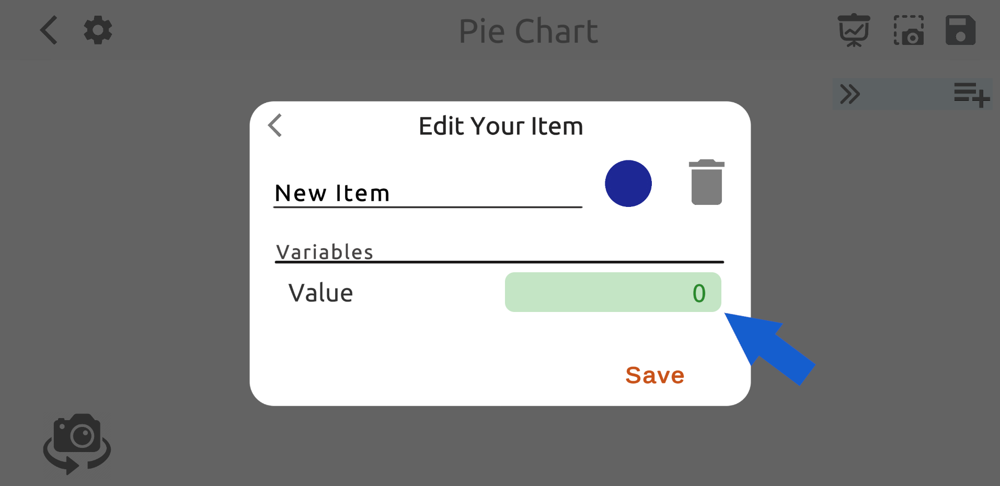
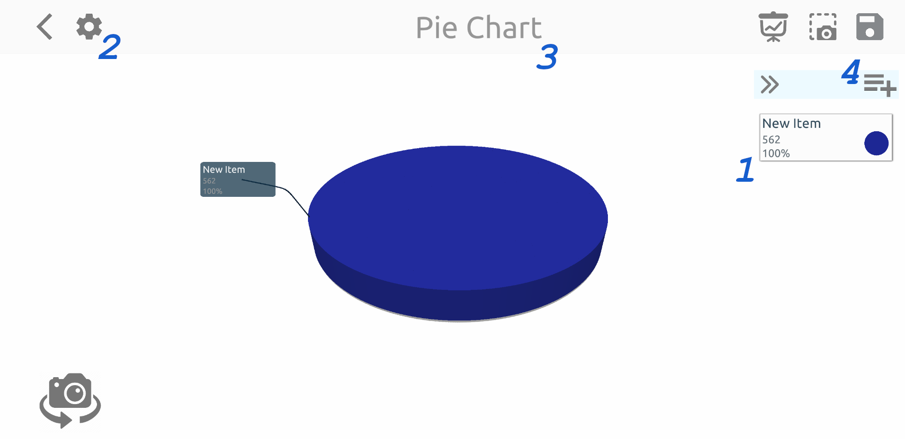
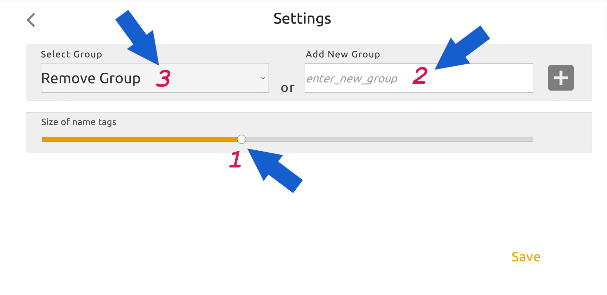
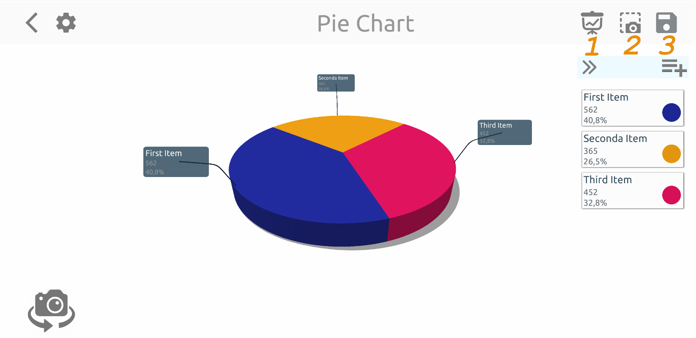
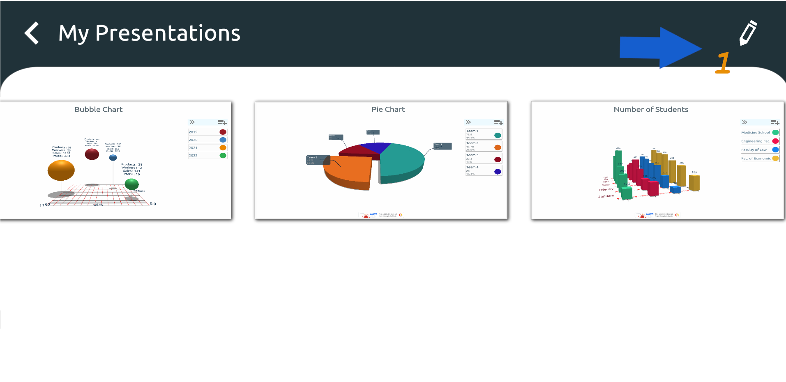
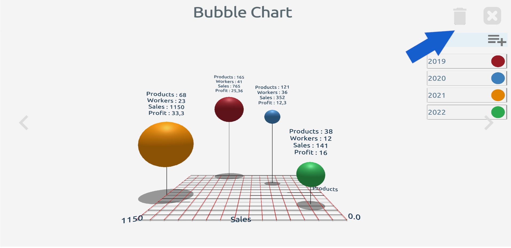
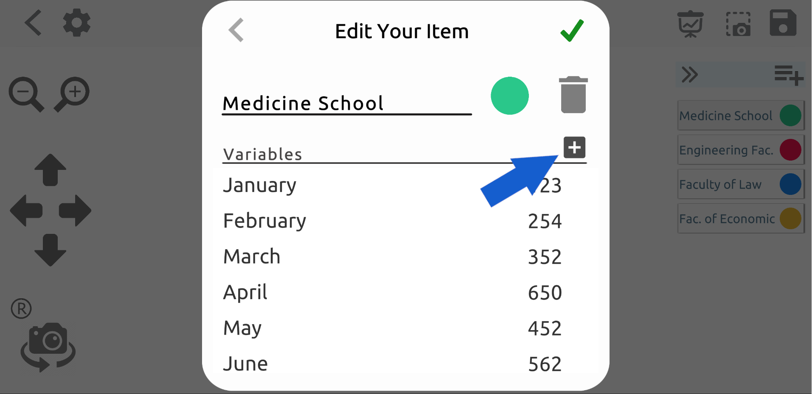
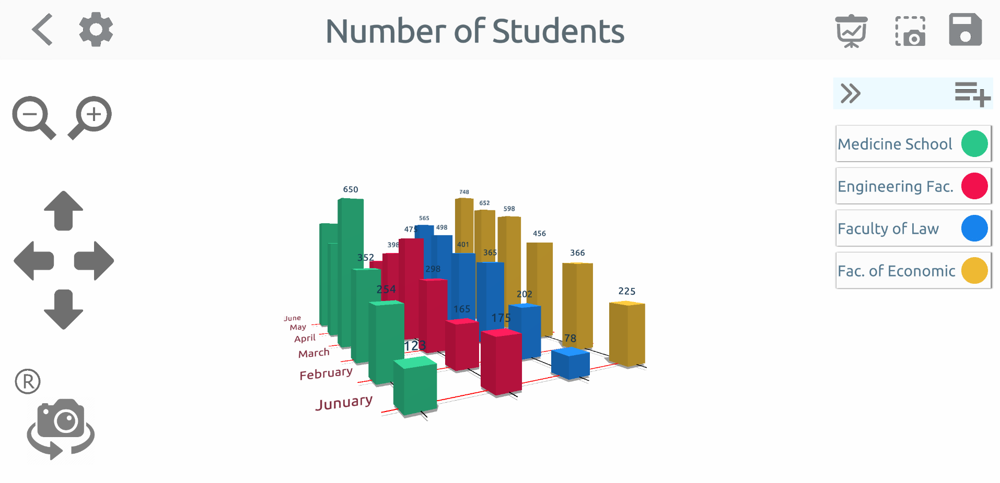
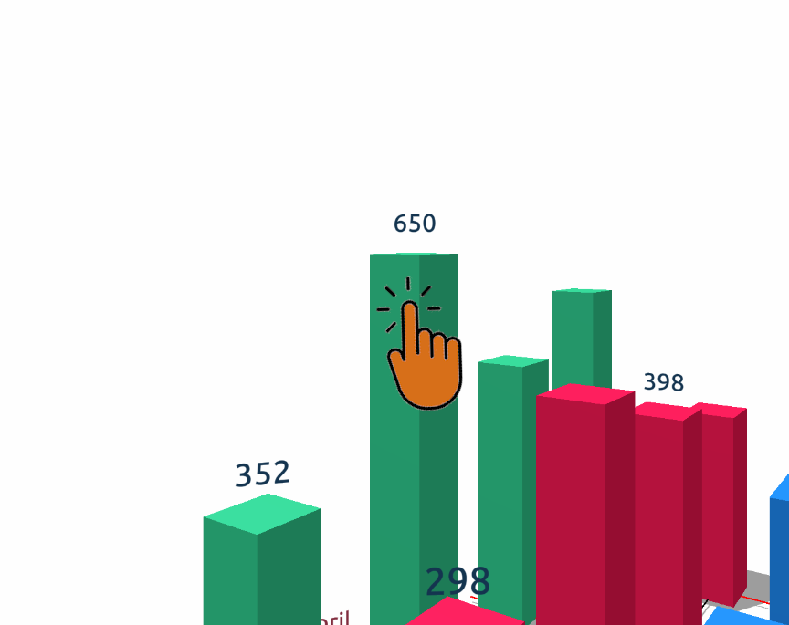
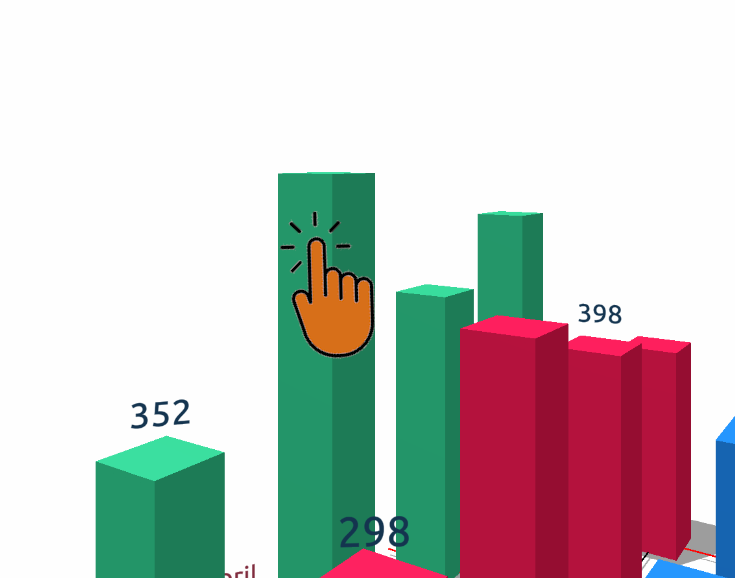

Kuchendiagramm
Stellen Sie sich vor, Sie wählen das Tortendiagramm aus dem sich öffnenden Bildschirm und erstellen ein Tortendiagramm mit den Daten, die Sie haben. Die Seite wird zuerst mit dem Fenster zum Hinzufügen von Elementen geöffnet. Nachdem Sie den Wert eingegeben und auf die Schaltfläche „Speichern“ geklickt haben, sehen Sie die erste Version des Tortendiagramms, wie unten gezeigt.
Da Ihrem Diagramm an dieser Stelle ein einzelnes Element hinzugefügt wurde, ist es normal, dass im mittleren Bereich ein ganzes Tortendiagramm in einer Farbe angezeigt wird. Wenn Sie auf das im Bild unten mit "1" gekennzeichnete Element "Neuer Artikel" klicken, sehen Sie die Farbe, den Namen und den Wert des aktuellen Elements. Sie können Ihre Eigenschaften ändern. Wenn Sie Ihrem Diagramm ein neues Element hinzufügen möchten, können Sie die Schaltfläche "Element hinzufügen" verwenden, die mit "4" gekennzeichnet ist. Sie können dieser Zeichnung einen neuen Namen geben, indem Sie oben auf dem Bildschirm auf den mit "3" gekennzeichneten Teil klicken. Sie können die Etikettengröße auf der Grafik festlegen und die Grafik zu einer Foliengruppe hinzufügen, indem Sie die Schaltfläche „Einstellungen“ verwenden, die durch „2“ gekennzeichnet ist.
Einstellungsfenster
Die folgende Seite öffnet sich mit der Schaltfläche "Einstellungen", die sich an Punkt zwei befindet. Der Schieberegler, der auf dieser Seite mit der Zahl „1“ gekennzeichnet ist Legt die Größe des Namensschilds neben dem Tortendiagramm fest. Bei Punkt „2“ können Sie einen Gruppennamen für Ihre Arbeit eingeben und Sie können Ihre Grafik in diese Gruppe aufnehmen, indem Sie auf das (+)-Symbol an der Seite klicken. Verwenden der Dropdown-Liste "3", anstatt eine neue Gruppe zu erstellen Sie können eine der verfügbaren Gruppen auswählen.
Was machen diese Gruppen also? Lassen Sie uns Ihnen jetzt davon erzählen.
Präsentationsgruppen
Im Bild unten sehen Sie rechts oben die Schaltflächen „1“, „2“, „3“. Nachdem Sie alle Ihre Werte eingegeben haben, können Sie Ihr Diagramm speichern mit der durch "3" gekennzeichneten Speichern-Schaltfläche. Die Schaltfläche „2“ ist die Screenshot-Schaltfläche. Wenn Sie Ihre Werte eingeben und Ihr Diagramm bereit haben Sie können entweder Ihre Präsentation von dieser Seite aus erstellen oder dieses Bild als Seite zu einer Foliengruppe hinzufügen, die Sie auf der Seite „Einstellungen“ erstellt haben. Auf diese Weise können Sie nacheinander Präsentationen erstellen, indem Sie verschiedene Arten von Grafiken derselben Foliengruppe hinzufügen. Schaltfläche „1“ öffnet die Foliengruppe, der die Grafik zugeordnet ist.
Eine Präsentationsgruppe ist genau so, wie sie unten aussieht. Die Foliengruppe mit dem Namen „Meine Präsentationen“ wird auf dem Bildschirm angezeigt. Screenshots aus verschiedenen Grafiken sind horizontal endlos angeordnet. Sie können andere Bilder sehen, indem Sie die Liste horizontal scrollen, Sie können sie als ganze Seite anzeigen, indem Sie darauf klicken. Auf diese Weise können Sie nacheinander verschiedene Arten von Grafiken für ein Projekt erstellen Sie können eine Präsentation machen. Sie können die Bilder mit der Schaltfläche "Bearbeiten" oben rechts neu anordnen.
Sie können das ausgewählte Bild aus der aktuellen Foliengruppe mit Hilfe der Schaltfläche "Löschen" löschen, wie sie bei Vollbildbildern oben rechts zu sehen ist.
Variablen
In einem Tortendiagramm haben Elemente nur eine Variable, und diese Variable ist der Wert des Elements. Aber für andere Diagrammtypen (Balken, Säulen, Blasen) Elemente können mehrere Variablen haben. Um die Anzahl der Variablen in Ihrem Diagramm zu erhöhen, klicken Sie auf die Schaltfläche (+), die im Bild unten gezeigt wird.
Sie sehen diesen Bildschirm, auf dem Variablen hinzugefügt, bearbeitet oder gelöscht werden. Hier können Sie bestehenden Variablen neue Namen geben. Sie können Variablen löschen oder eine neue erstellen. Wenn Sie eine Änderung an einer Variablen vornehmen oder eine neue Variable hinzufügen, wird diese Änderung sofort auf die anderen Elemente im Diagramm übertragen. Nachdem Sie den Wert der neu hinzugefügten Variablen für alle Elemente eingegeben haben, können Sie Ihr Diagramm speichern.

Wie Sie sehen können, werden die Variablen der Elemente im Diagramm angezeigt. Sie können ändern, ob Achsenlinien und Informationen auf dem Einstellungsbildschirm angezeigt werden. Darüber hinaus können Sie die Grafik mit den Kameratasten auf der linken Seite des Bildschirms aus verschiedenen Blickwinkeln betrachten und mehrere Screenshots erstellen aus verschiedenen Blickwinkeln in überfüllten Grafiken.
In Balken-, Säulen- und Blasendiagrammen können Sie auf die Diagrammmodelle klicken, um die Informationsbeschriftung über dem Modell auszublenden oder sichtbar zu machen.
 